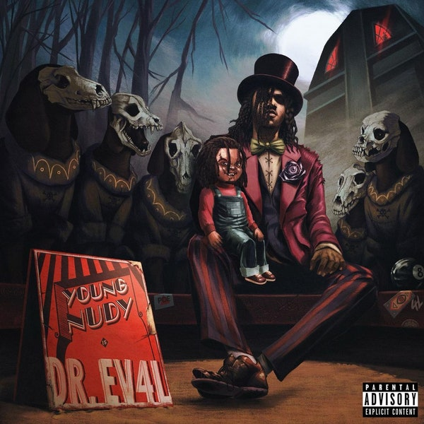
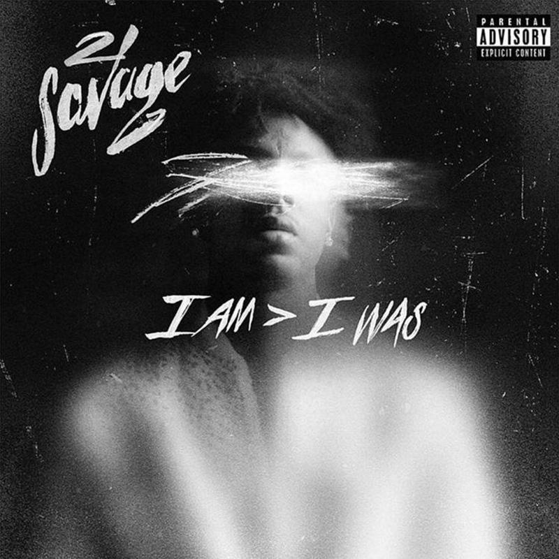

In meinem Alltag höre ich gerne musik. Wenn ich Zeit habe stecke ich mir die Kopfhörer in die Ohren und höre Englisch Rap.
Ich mag viele Englische Künstler, daher habe ich eigentlich auch kein Lieblings-Rapper. Am liebsten höre ich Musik von Playboi Carti, Lil Baby, 21 Savage und Young Nudy.
Immer wenn ich Musik höre werde ich von der Musik beruhigt oder entspannt. Ich bin auch immer sehr aktiv. Damit meine ich, dass wenn ein neues Lied oder Album veröffentlicht wird höre ich es mir sofort an.
Ausserdem spiele ich auch Klavier. Im moment spiele ich gerade Bohemian Rhapsody. Das ist einer der berühmtesten Lieder von Queen. Habt ihr sicher auch schon irgendwo gehört.

